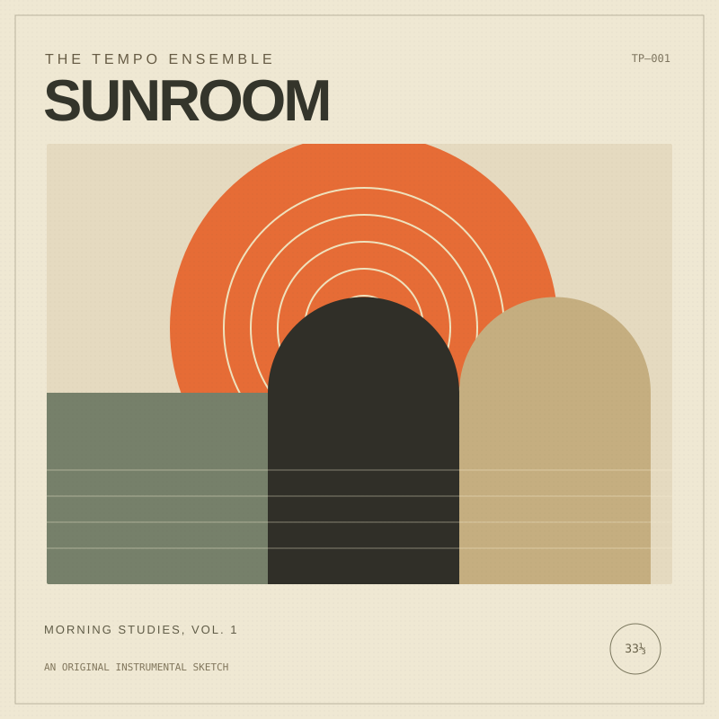

INDEPENDENT SOUND. UNDIVIDED ATTENTION.LISTENING ROOM — VOL. 001

TP—001 / SIDE ACOMPOSED FOR THIS ROOM
HIGH FIDELITY
LOW DISTRACTION.
STEREO
LOW DISTRACTION.
TM—01
STEREO
LOADING SESSION01 / 03
DOWNTEMPO / 100 BPM
Sunroom
The Tempo Ensemble — Morning Studies, Vol. 1
Windows open. Coffee cooling. A warm little groove for the space between things.
ORIGINAL SESSIONWAV · STEREO · 22.05 kHz
00:00A SHORT ORIGINAL. A LONG EXHALE.00:29
This track could not load.
On the turntable
A little room for your favorites.
Tap the heart on a track to keep it here.